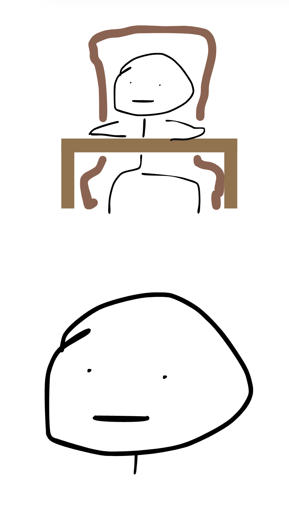
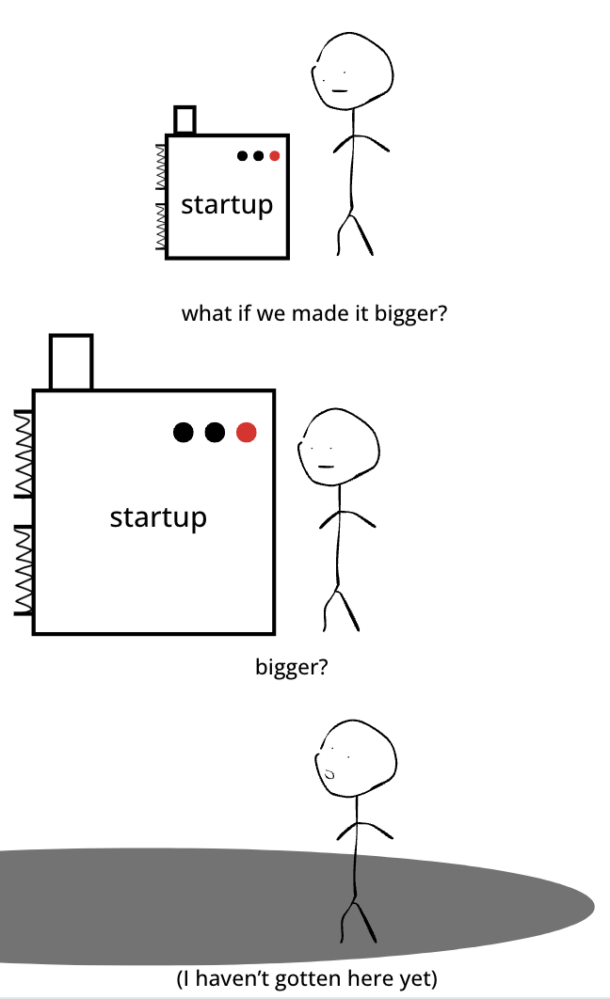

I’m 4 weeks into not having a full-time job. The good news is I have a lot of free time to try all the things I always wanted to try. The bad news is that - in the absence of investors or cofounders - I have virtually zero accountability.
In the absence of accountability, the first 2 weeks of my freedom looked like this.

College is when most people first encounter (and occasionally get knocked out) by this dilemma.
Freshman year me may have made a competition out of how fast I could chug. Being an adult in NYC is arguably even more dangerous in this regard - you have more money, more time, and none of the external pressure/validation that comes with grades.
This blog came about as an attempt to put my own motivation through a centrifuge to see what kind of stuff is inside. The results look a little gross.
For the first period of my productive life my engine ran primarily on high-octane, concentrated spite.

Fuel 1: Spite
The classic media example of spite-fueled motivation is the breakup-to-personal-transformation story, but I think I managed to turn it into a lifestyle by being mad at everyone.
The extent didn’t hit me until I was chatting with my mom about what motivated me back in middle school and learned that I was angry at my classmates and wanted to be more successful to somehow win in the long run. If this sounds suspiciously close to incel tendencies - then maybe it is. The big difference was externalizing the problem (blame the world) vs internalizing it (blame myself) and burning it as fuel.
The problem with spite is that it isn’t sustainable:
- You can’t be angry all the time.
- If it works - eventually you run out of spite.
At some point in college I realized I mostly liked everyone around me. Shit. What to do now.

Fuel 2: Anxiety
I contend that 1st gen parents run the table on the anxiety-to-dollars pipeline. Bonus points if you didn’t get financial support. Sure, caffeine is great. But there’s nothing like a deeply entrenched sense of scarcity to keep you from sitting still. Sure, you might get older and start asking yourself “who am I really doing this for?”. But by then you’ve got a career and nice health insurance to pay for the therapy.
University makes for a spectacular anxiety gym. If it doesn’t wash you out entirely, the treadmill of chasing grades, internships, and leadership positions makes for a great training ground for playing similar games in a corporate setting.
Consulting does an even better job of weaponizing insecurity. I say this with admiration rather than any feeling of regret. The way one might admire an artisanally designed mousetrap. Part of me wants to go work in consulting for 3 months as a bootcamp to get my discipline back. Tech doesn’t do this nearly as well - but as long as you can legibly keep comparing yourself to peers and chasing career advancement on a short (~1 year) loop, then you can keep the fuel burning.
The biggest downside to anxiety-driven motivation is preventing you from taking high-risk bets that could have outsized payoffs, like building a company, dropping out, or pursuing non-standard career paths.
In my case this translated into holding onto my job for 2 years before going full-time on my startup. 4 if you count startups I built that failed - or startups that offered me jobs but felt like poor financial bets.
Which brings us to today. No gods, no masters. Now what.

Fuel 3: Stimulants
Were you really thinking I was gonna say habits or self-discipline?
At some point my financial needs will go up, I’ll remember that I’m not actually retired, and anxiety will kick back in. But for now the thing that works is curiosity. Not the discovery kind, or the learning kind. The building kind. On a good day working feels similar to playing Minecraft, or Zoo Tycoon.

Part of the fun of startups is that learning and growth are definitionally baked into the process. If you’re not doing something at least a bit novel - chances are you’re already behind. If you’re not growing you’re dying. Business is innately adversarial - you can’t just do the thing, you have to do it better than others. Adam Smith thinks capitalism is an effective system for allocating resources. But he forgot to mention that it’s entertaining.
And if you ever find yourself having mastered a process, that’s a good reason to hire someone. YourMove now has ~10 contractors on it part-time, at least a few of which are there to do work that I don’t feel like doing and otherwise procrastinate on. Like talking to customers. Kidding. Unless.
It’s hard to exaggerate just how fun building a company has been.
The downside is that greed burns slower than fear. And intrinsic motivation hits softer than the kick of external validation. As it stands I can log 6 hours/day of something productive before the urge to goof off kicks in. Modern problems require modern solutions. I propose stimulants.
Mix 3 parts curiosity, 1 part stimulant of choice, and 1 group fitness class. Shake vigorously. Serve over ice.

It doesn’t quite look like a pyramid, but maybe we can call it Maslow’s motivational latte. I’ll be drinking 2 of these a day starting next week. Will let you know how it goes.
Footnotes
1. If you ever have the luxury to try it, unemployment with no fear or financial pressure is unbelievably fun. One of the truths I almost wish I hadn’t discovered is that not working is actually incredible. At some point if you want to achieve anything meaningful - the accountability begins to accumulate one way or another. But for now, running a low-overhead lifestyle business and choosing what to do every morning feels like an absolute dream. ↩
2. Unless you can somehow meditate yourself into feeling angry. Not sure it works that way - but if you’ve ever tried then please let me know. ↩
3. Consulting, law, banking, accounting. Pick your choice of high prestige workplaces that optimize for hiring insecure overachievers and churn through them. ↩
4. I didn’t appreciate it until I worked elsewhere - but Deloitte had a beautiful system of carrots and sticks. Keeping everyone cranking for 60 hours a week, while reliably rewarding top performers and gradually pushing out everyone else. If I ever run a services business, I will absolutely steal ideas from the consulting talent playbook. ↩